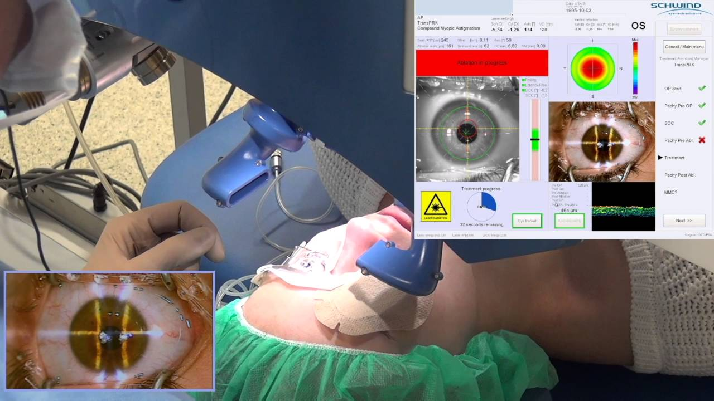

Laser Eyes Surgery
A correction the shape of the cornea using a laser, so a precise tool called a microkeratome is used to remove a thin layer from the surface of the cornea except for a small part of it that keeps it attached to the eye and is pushed back, and then an excimer laser is used to remove part of the inner tissue of the cornea and then the surface layer of the cornea is returned to its normal position, Types of Laser Surgery such as:
Z LASIK

Z-LASIK is a laser-assisted in situ keratomileusis is a corrective surgery in which a thin layer of the cornea is lifted and moved sideways to allow the laser to reshape the cornea. It's innovative blade-free procedure that uses only high-tech computer measurements and lasers to perform vision correction for many patient eye problems.
More InFo +TRANS-PRK-Smart Surface
SmartSurfACE is a new method of laser eye surgery that works without touching the eye. That is, it combines the advantages of the touch-free TransPRK surface treatment with the newly innovative SmartPulse technology. The "result is clear vision", with no "side effects" or other problems. This touch-free laser vision correction is non-invasive and "safe, gentle and stress-free", for a much better seeing.
More InFo +Phakic-IOLs

Are clear implantable lenses that are surgically placed either between the cornea and the iris (the colored portion of your eye) or just behind the iris, without removing your natural lens. Phakic lenses enable light to focus properly on the retina for clearer vision without corrective eyewear. They are an alternative to LASIK and PRK eye surgery for correcting moderate to severe myopia (nearsightedness), and in some cases produce better and more predictable vision outcomes than laser refractive surgery.
More InFo +what's mean PRK?
Photorefractive keratectomy (PRK) is an out-patient surgical procedure used to correct refractive errors (myopia, hyperopia, astigmatism) and to reduce dependency on glasses or contact lenses. PRK uses a laser to reshape the cornea and to improve the way the eye focuses light onto the retina. PRK used to be the most common refractive procedure and it is still indicated for certain patients.
Who is it suitable for?
Laser eye surgery is suitable for most people over 18. Ideally your eye prescription will have stayed more or less the same for about 2 years. Lens surgery may be more suitable if you have a high spectacle prescription or later in life.
Are there any risks?
About 1 in 10 people who have laser eye surgery need more surgery to get the best possible results. There's usually no extra cost for this.
Common side effects include:
Mild, gritty discomfort : artificial tears can help with this and your eyes will usually feel comfortable again in about 3 to 6 months.
Visual disturbances :Visual disturbances (such as glare from oncoming headlights when driving at night) – this usually resolves or can be treated successfully
Red marks on the white of eye : these always fade away in about a month Severe loss of vision is very rare.
What are the risks, complications and side effects?
What are the risks, complications and side effects?With an experienced doctor and careful patient selection, complications (listed below) are rare and can usually be treated without any loss of vision. Some of these complications may require extra medications or further procedures (lacrimal plugs, glasses, contact lenses, corneal cross-linking, re-operation, corneal graft) incude as:
dry eyes,
long healing period/delayed recovery,
glare or halos,
over or under-correction,
corneal haze or scarring,
increased sensitivity,
infections and
ectasia.
What happens after surgery?
You will be escorted to a recovery room to rest for a while after which your eyes will be checked. After the check you may go home but you will need someone to take you as you will not be able to drive. It is advised to use dark glasses on your way home as bright lights may feel uncomfortable. These glasses should be used for one week (at night) to avoid accidental scratching or rubbing. You will be instructed to use eye drops to avoid infections, speed the healing process and moisten the cornea. Please do not leave the clinic before your eyes have been examined and the post-operative appointment has been given.